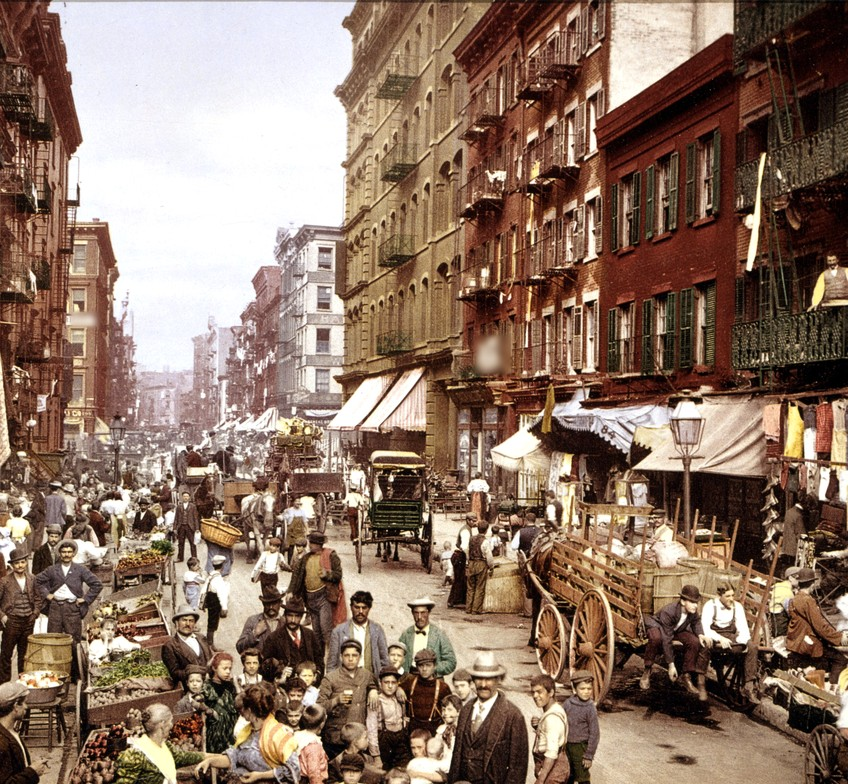
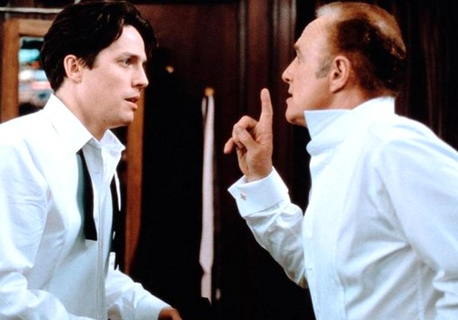

Ristorante · Mulberry Street
Vito’s
Little Italy, New York

Our block, around 1900. Some of these people are still at table four.
Tonight’s guest of honor
Mickey Blue Eyes
All the way from Kansas City. Nobody asks about Kansas City.
Marry the girl, you marry the family. 212-555-1999
Open for the menu
Lesson one

Table six, Tuesday. He was close. He was not there.
How to say it
Fuhgeddaboudit
FUH·GED·DA·BOUD·IT
1. Slower. Slower.
2. No T. No G.
3. No England.
4. Never “forget
about it.”
5. Means yes, no,
thanks and sorry.
2. No T. No G.
3. No England.
4. Never “forget
about it.”
5. Means yes, no,
thanks and sorry.
Vito
Card stays at the table. Practice is free.